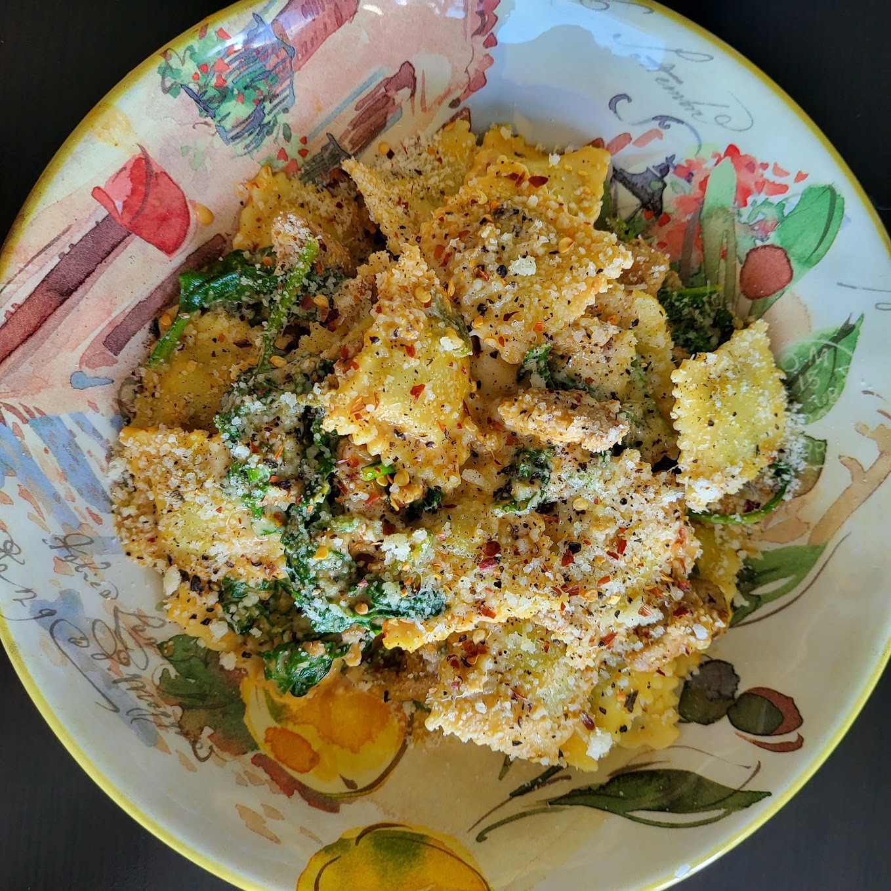

Spinach & Ricotta Ravioli Recipe

Ingredients
- Fresh spinach & ricotta ravioli
- Ground turkey
- Pumpkin puree
- Whipping cream
- Spinach
- Parmesan cheese
- Walnuts
- Garlic
- Butter
- Canola oil
- Sage
- Red pepper flakes
- Spice blend (ground fennel seed, oregano, dried basil)
Steps
- PREPARE INGREDIENTS:
Bring 2 litres salted water to a boil in a large pot.
Wash, pick and tear sage leaves into 1/2 inch pieces.
Drain ground turkey and pat dry with paper towel. Season well with salt and pepper.
- COOK RAVIOLI:
Once water boils add ravioli and cook for 6–7 minutes or until al dente.
Reserve 1 cup pasta water and drain in a sieve.
- COOK TURKEY:
Begin this step once ravioli is added to pot.
Heat 1 tbsp. oil in a second large pot over medium-high.
Once hot, add ground turkey and spice blend and cook for 3–4 minutes.
Use a wooden spoon to break apart and cook until turkey reaches an internal temperature of 165°F.
- PREPARE SAUCE:
Reduce heat to medium on pot with turkey.
Add walnuts, sage and garlic and cook 30 seconds to 1 minute until fragrant.
Add whipping cream, pumpkin puree, half of both parmesan and pasta water.
Cook 1–2 minutes until sauce slightly thickens.
Add 1 tbsp. butter, ravioli and spinach to pot and toss to coat ravioli in sauce and wilt spinach.
Add 1 tbsp. pasta water at a time until desired consistency is reached.
Taste and adjust seasoning with salt and pepper.
- SERVE:
Divide ravioli between serving bowls.
Garnish with remaining parmesan.
Serve red pepper flakes on side.
Enjoy!